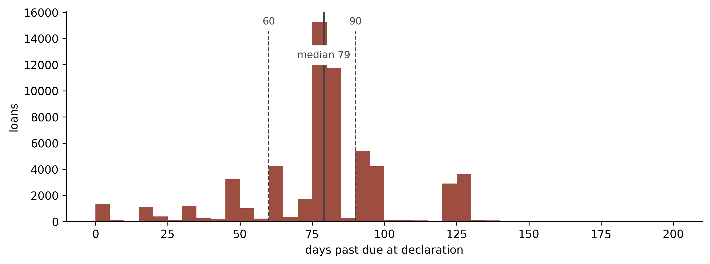
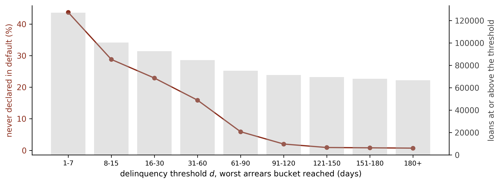

Credit Lecture D1: The Definition of Default, Cure and Write-off
Deep Learning for Actuarial Modelling: a credit risk companion
Author
Mario Ervedosa
Published
September 3, 2026
Abstract
Credit lecture 1 named default three times and finished the job none of them. It cited Article 178, quoted a three-dial formalism from the impairment literature, and coined the worst-ever window flag, yet it never separated the competing response variables those dials produce, mentioned cure once in a subordinate clause, and never mentioned write-off at all. This lecture pays that debt and then argues something stronger. A default definition is a claim about a sequence of monthly delinquency states, so which definitions a modeller can implement is settled by the shape of the data rather than by the regulation. Three response variables are separated and measured against each other, where 90 per cent of the flags under one of them mark loans already in default earlier in the window. Cure, probation and write-off are defined and then swept, where lengthening probation from three months to twenty-four suppresses re-default from 9.8 per cent to 1.4 and destroys two fifths of the cures doing it. The lecture closes on what a snapshot extract cannot answer, and hands the sampling question to lecture R3.
1 Where lecture 1 stopped
Lecture 1 treated the definition of default as settled background and moved on to the modelling. It was right to move on and wrong to call it settled. Three times it reached for the definition and three times it stopped short. It cited Article 178 of the Capital Requirements Regulation for the ninety-day backstop, then noted that Bondora records its own flag instead. It quoted a formalism with three dials from the impairment literature, tabulated what Bondora’s choice of each one was, and never turned any of the dials. And it coined the phrase worst-ever aggregation for the window maximum, observing in passing that a loan which breaches and then cures still scores a one, without ever asking what curing is or how often it happens.
This lecture, by contrast, turns the dials. Along the way it corrects one number lecture 1 asserted, separates three response variables that practice routinely calls by one name, and gives cure, probation and write-off the definitions the earlier lectures assumed they already had.
Furthermore, it argues something the series has not yet said. Every dial below is a statement about a sequence of monthly delinquency states. A cross-sectional loan extract records dates and a terminal status, so it carries no such sequence, and consequently a modeller holding one cannot implement most of the definitions on offer whatever the regulation permits. The definition and the data shape are one question rather than two, which is why the second half of this lecture is about data engineering and belongs here rather than in an appendix.
NoteWhere this sits in the series
Lecture 1 fixes the outcome window and coins the worst-ever aggregation. This lecture owns the response variable, meaning what the target column is and how a definitional choice changes it.
Four neighbours own the rest. Lecture R1 owns estimation, and it already derives the marginal PD this lecture merely names. Lecture R2 owns the capital formula and, importantly for the vocabulary below, the worst-case default rate, which is a stressed quantile and has nothing to do with this lecture’s worst-ever window flag. The S track owns the hazard machinery that estimates any of the three targets defined here. Lecture R3 owns sampling and representativeness: this lecture builds the outcome variable and R3 picks the rows that carry it.
1.1 The one number lecture 1 got wrong
Lecture 1’s dials table recorded Bondora’s delinquency threshold as “roughly two payments, since the platform flags at 60 days past due”, and its outcome-window section reasoned from the same sixty days. Neither figure was measured. Measuring it turns out to matter, and for a reason beyond the number itself.
Bondora publishes two fields that between them settle the question. DebtOccuredOn records a date associated with the onset of arrears and CurrentDebtDaysPrimary a running count of days past due. However, what is not documented is whether DebtOccuredOn marks the first day past due or some later operational milestone, and the whole exercise turns on which. The identity below settles it.
import numpy as npimport polars as plimport matplotlib.pyplot as pltOX, GREY, RULE ="#8C2F1E", "#B0B0B0", "#444444"raw = pl.read_parquet("../data/bondora_raw.parquet")late = ( raw.filter( (pl.col("Status") =="Late")& pl.col("DebtOccuredOn").is_not_null()& pl.col("CurrentDebtDaysPrimary").is_not_null() ) .with_columns( ((pl.col("ReportAsOfEOD") - pl.col("DebtOccuredOn")).dt.total_days()- pl.col("CurrentDebtDaysPrimary")).alias("residual") ))pl.DataFrame({"quantile": ["10th", "25th", "50th", "75th", "90th"],"residual": [late["residual"].quantile(q) for q in (0.1, 0.25, 0.5, 0.75, 0.9)],}).with_columns(pl.lit(late.height).alias("loans"))
shape: (5, 3)
quantile
residual
loans
str
f64
i32
"10th"
1.0
68480
"25th"
1.0
68480
"50th"
1.0
68480
"75th"
1.0
68480
"90th"
1.0
68480
The residual is exactly one day across the middle eight deciles of the 68,480 late loans. Hence CurrentDebtDaysPrimary counts forward from DebtOccuredOn with a one-day offset, which means DebtOccuredOn is the day the days-past-due counter starts. Consequently the gap between it and DefaultDate is days past due at the moment default was declared, and that is a quantity we can put a distribution on.
lag = ( raw.filter(pl.col("DebtOccuredOn").is_not_null() & pl.col("DefaultDate").is_not_null()) .with_columns( (pl.col("DefaultDate") - pl.col("DebtOccuredOn")).dt.total_days().alias("dpd") ))pos = lag.filter(pl.col("dpd") >0)print(f"loans carrying both dates {lag.height:>7,}")print(f" lag exactly zero {lag.filter(pl.col('dpd') ==0).height:>7,}")print(f" lag negative {lag.filter(pl.col('dpd') <0).height:>7,}")print(f" lag strictly positive {pos.height:>7,}")print()qs = [0.01, 0.05, 0.10, 0.25, 0.50, 0.75, 0.90, 0.99]print("days past due at declaration, percentiles of the positive-lag loans")print(" "+" ".join(f"p{int(100*q):02d}={int(pos['dpd'].quantile(q)):>4d}"for q in qs))print()for lo, hi, label in [(None, 60, "under 60 days"), (60, 90, "60 to 90 days"), (90, None, "90 days or more")]:if lo isNone: n = pos.filter(pl.col("dpd") < hi).heightelif hi isNone: n = pos.filter(pl.col("dpd") >= lo).heightelse: n = pos.filter(pl.col("dpd").is_between(lo, hi)).heightprint(f" declared {label:<16}{n:>7,} ({100* n / pos.height:4.1f} per cent)")
loans carrying both dates 67,712
lag exactly zero 7,917
lag negative 101
lag strictly positive 59,694
days past due at declaration, percentiles of the positive-lag loans
p01= 1 p05= 21 p10= 48 p25= 74 p50= 79 p75= 92 p90= 122 p99= 126
declared under 60 days 9,209 (15.4 per cent)
declared 60 to 90 days 33,763 (56.6 per cent)
declared 90 days or more 16,861 (28.2 per cent)
Two anomalies travel with that table and are named rather than dropped. 7,917 loans carry a declaration on the very day arrears began, and 101 carry a DefaultDate before their DebtOccuredOn. Both are, in all likelihood, operational artefacts of a platform reconstructing its own history, and a bank’s data quality assessment would raise an exception on each. They are excluded from the percentiles above and they are not excluded from the count of defaults anywhere in this series, which is the honest treatment: the event happened, and only its dating is unreliable.
The correction, then, is that the median declaration sits at 79 days rather than 60. More useful, however, is the dispersion around it. The lag runs from a single day to 126, some 15.4 per cent of declarations land under sixty days past due, and 28 per cent reach ninety or beyond.
fig, ax = plt.subplots(figsize=(9, 3.4))vals = pos["dpd"].to_numpy()ax.hist(vals[vals <=200], bins=np.arange(0, 205, 5), color=OX, alpha=0.85)for x, lab in [(60, "60"), (90, "90")]: ax.axvline(x, color=RULE, ls="--", lw=1) ax.annotate(lab, (x, ax.get_ylim()[1] *0.94), color=RULE, ha="center", fontsize=9, backgroundcolor="white")ax.axvline(79, color=RULE, lw=1.6)ax.annotate("median 79", (79, ax.get_ylim()[1] *0.78), color=RULE, ha="center", fontsize=9, backgroundcolor="white")ax.set_xlabel("days past due at declaration")ax.set_ylabel("loans")for s in ("top", "right"): ax.spines[s].set_visible(False)plt.tight_layout()

Days past due at the moment Bondora declared default, on the 59,694 loans whose arrears-onset date precedes their default date. The histogram is truncated at 200 days for legibility, which drops 24 loans. Dashed rules mark the two thresholds the literature and the regulation reach for, at 60 and 90 days; the platform’s own median, the solid rule at 79 days, sits between them and its mass straddles both. A definition that fires on a fixed threshold would put every loan on one side of a single rule, so the spread here is the evidence that this flag is an operational decision rather than a rule.
Lecture 1’s outcome-window argument survives the correction and strengthens on it. That lecture observed that a three-month window returns a default rate of 0.16 per cent, which measures nothing, because a first instalment falling due a month after drawdown cannot accumulate enough arrears before the window closes. At 79 days rather than 60 the earliest possible declaration moves out to roughly 110 days after origination, past the close of a three-month window. The book agrees.
mob = ( raw.filter(pl.col("DefaultDate").is_not_null()) .with_columns( ((pl.col("DefaultDate") - pl.col("LoanDate")).dt.total_days() /30.44).alias("mob") ))print(f"defaults in the book {mob.height:>7,}")print(f" earliest, months on book {mob['mob'].min():>7.2f}")for cut in (1, 2, 3, 4):print(f" declared before month {cut}{mob.filter(pl.col('mob') < cut).height:>7,}")
defaults in the book 71,416
earliest, months on book 1.61
declared before month 1 0
declared before month 2 1
declared before month 3 259
declared before month 4 7,499
No default precedes the first month on book, exactly one precedes the second, and 259 of 71,416 precede the third. Indeed, lecture S1 built an argument on the same structural fact when it explained why the estimated hazard is genuinely zero in month one. Both lectures were right about the mechanism and wrong about the threshold driving it, and both now quote the measured figure.
2 Terminology
This lecture is the one the rest of the credit series points back to for vocabulary, so the terms come before the formulae. Each definition below is used to build the next, which is why they run in this order rather than alphabetically.
Performing. A loan meeting its contractual obligations. The state every other state is defined against.
Arrears, or delinquency. A missed or partial payment, measured either in days past due or in whole missed payments. The two measures are not interchangeable, and the difference matters more than it looks. Days past due is a property of a calendar, whereas payments in arrears is a property of a schedule. On a monthly instalment loan with equal payments they track each other, so thirty days is roughly one payment. However, on a revolving card they part company. On a revolving card with a minimum payment that moves with the balance, they come apart.
Default. An event declared when delinquency crosses a threshold, or when the lender judges the borrower unlikely to pay. Regulation fixes a floor for capital purposes. Nothing fixes it, however, for a behavioural or impairment model, where the modeller chooses, and the choices are the dials of the next section.
Cure. The transition from default back to performing. It is distinct from settlement, however, where the contract closes because the balance was repaid, since a cured loan is still on the book and still capable of defaulting again.
Probation. A period a loan must spend clear of every default trigger before it is allowed to count as cured. Without one, however, a borrower who makes a single payment leaves default immediately and re-enters it the following month, and the default series turns into noise.
Re-default. A second default after a cure. Whether it counts as one event or two is, again, a choice. Whether two episodes are one event or two is a definitional choice in the same family as the others.
Write-off. The accounting decision to derecognise a balance the lender has no reasonable expectation of recovering. Absorbing, and distinct from default: a loan can sit in default for years without being written off, and the two decisions answer to different rulebooks.
SICR, a significant increase in credit risk. The trigger that moves a loan from a twelve-month to a lifetime expected-loss measurement under IFRS 9. It sits, in other words, upstream. Upstream of default, and bounded above by it, since a defaulted loan has already gone past the point SICR is trying to anticipate.
Staging. The consequence of SICR. Stage 1 carries twelve-month expected loss, Stage 2 lifetime, and Stage 3 is the defaulted or credit-impaired bucket.
Worst-ever. Lecture 1’s name for the window-maximum aggregation, where a loan scores a one if it defaulted at any point inside the window even if it recovered before the window closed.
Point-at-horizon. The status at exactly the end of the window, which is a different flag and is measured against worst-ever in section 4.
Marginal PD. The probability of a first default dated to a particular period, conditional on having survived to it. Lecture R1 derives it; this lecture only needs to keep it apart from the other two.
WarningWorst-ever is not the worst-case default rate
Lecture R2 uses worst-case default rate for the stressed default rate at the 99.9th percentile of the systematic factor, which is the quantity the regulatory capital formula evaluates. It has nothing to do with the window maximum defined here beyond an unfortunate overlap in English. This lecture says worst-ever throughout and never abbreviates it.
2.1 Notation
Lecture 1’s symbols are canon and none of them is redefined here. Two errata surfaced while checking that claim, both recorded in notes/default-definition-lecture-structure.md, and one of them frees a letter this lecture needs.
Symbol
Meaning
Provenance
\(t\)
months on book
lecture 1
\(g_i\)
origination month of loan \(i\)
lecture 1
\(\tau\)
the snapshot date, never subscripted
lecture 1
\(y_{i,t}\)
monthly default flag
lecture 1
\(D_i^{(k)}\)
window default indicator over \(k\) months
lecture 1
\(q_{i,t}\)
discrete hazard
R1, S1
\(a_{i,t}\)
arrears in payments at month \(t\)
new here
\(d\)
delinquency threshold, in payments
new here
\(s\)
consecutive months the threshold must hold
new here
\(k\)
outcome period, in months
lecture 1
\(p\)
probation period, in months
new here
Four rules keep those apart from what the series already spends. A bare \(d\) is the delinquency threshold and a superscripted \(d^{\rm def}_t\) is a life-table decrement count, which is lecture 1’s existing convention extended rather than changed. Similarly, a bare, unsubscripted \(p\) is the probation period, and every probability in the series carries a subscript, so \({}_k p_{i,t}\) and \(p_{ml}\) are untouched. \(D\) appears as an indicator only with a sub- or superscript, leaving R1’s bare Markov state labels alone. And \(\tau\) stays unsubscripted, unlike in the source literature, where entry and resolution times are written as subscripted variants of it.
The arrears measure earns a note of its own. Lecture 1 introduced a delinquency counter in its own callout and never reused it, and the guides define an arrears measure as days past due divided by thirty. This lecture writes \(a_{i,t}\) for arrears in payments and converts explicitly wherever the data supplies days instead. The two agree only where instalments are monthly and equal, which holds for Bondora and fails for the revolving card portfolio of section 10, so they are never silently swapped.
3 The four dials
A default definition is a function of the delinquency history, and it has four parameters. Practice writes down at most one of them.
Let \(a_{i,t}\) be the arrears on loan \(i\) at month \(t\), counted in payments. Fix a threshold \(d\) and a persistence requirement \(s\). A preliminary event is declared at \(t\) when the arrears have held at or above the threshold for \(s\) consecutive months,
\[
\mathcal{G}_{i,t}(d, s) = \left[ \sum_{v = t - (s - 1)}^{t} \left[ a_{i,v} \ge d \right] = s \right],
\]
writing \([\,\cdot\,]\) for Iverson brackets, so that the inner bracket is one where the month’s arrears reach the threshold and the outer bracket is one where every month in the window did. Lecture 1 stated this and could go no further, because Bondora records no monthly arrears series to evaluate it on. Section 10 evaluates it.
The provenance deserves a line, because the formalism is borrowed slightly out of its original setting. Botha, Oberholzer, Larney and de Jongh write \(\mathcal{G}\) as a SICR-decision function and sweep it at \(d \in \{1, 2\}\), one or two payments in arrears, which is the shallow end where a significant increase in credit risk is detected. Their own default column is the same delinquency measure at a deeper threshold, \(g_0(t) \ge 3\). The machinery is therefore identical and only the threshold moves, which is exactly this lecture’s point, so \(\mathcal{G}\) is used here for the default trigger with the threshold pushed out to where default lives. The \(s\)-parameter, in their words, “smooths away rapid 0/1-fluctuations” in the status over time.
The third dial is the one lecture 1 did spend. The response variable at \(t\) reads the state \(k\) months ahead, and section 4 shows that “reads the state” hides a choice of its own.
The fourth dial, by contrast, governs the way back. Once a loan is in default, a single clear month should not release it, so a probation period \(p\) requires the loan to be clear of every trigger for \(p\) consecutive months before it counts as cured. Formally, the loan is in probation at \(t\) if it triggered at any point in the preceding \(p\) months,
The default state that a model actually predicts is the complement of cure rather than the preliminary trigger itself, so write \(D_{i,t}(d, s, p) = 1 - \mathcal{C}_{i,t}(d, s, p)\). Hence that distinction between the trigger and the state is where cure lives, and dropping it collapses the whole return path.
The state machine the four dials parameterise. A loan leaves performing when arrears reach the threshold \(d\), and the transition to default fires only once that has held for \(s\) consecutive months, which is why the trigger and the state are drawn separately. The return path is gated by \(p\) clear months, and a loan that re-enters arrears during probation never reaches cure. Write-off is absorbing and sits outside the default-to-cure loop entirely, because it answers to an accounting test rather than to a delinquency counter. The outcome period \(k\) does not appear: it is not a transition but the horizon over which the diagram is read, which is the subject of the next section.
Before turning to the dials the regulation does fix, it is worth recording that one standard says outright that the definition is the firm’s own. IFRS 9 paragraph B5.5.37 requires that
an entity shall apply a default definition that is consistent with the definition used for internal credit risk management purposes for the relevant financial instrument […] However, there is a rebuttable presumption that default does not occur later than when a financial asset is 90 days past due unless an entity has reasonable and supportable information to demonstrate that a more lagging default criterion is more appropriate.
So the accounting standard sets a backstop and otherwise defers to whatever the bank already does, which makes the dials of this section the bank’s to choose and its own consistency the binding constraint. Nonetheless a firm running one default definition for capital and another for impairment is not breaching the standard by having two, and it is breaching it if either one drifts from what its credit risk management actually uses.
Two of these dials are visible in the regulation and two are not. Article 178 of the Capital Requirements Regulation fixes a threshold, in days rather than payments, and pairs it with a judgement-based limb that fires regardless of arrears. It also requires a period clear of triggers before a defaulted exposure returns to performing, which is \(p\) under another name. What it does not fix is \(s\), and what no regulation fixes is the modeller’s freedom over \(k\). Consequently a behavioural or impairment model has at least two dials that are pure choices, and a reported default rate is uninterpretable until both are stated.
4 Three targets wearing one name
Fix all four dials and one question remains, and it is the question this lecture exists to separate. Having decided what default means at a month, what does the response variable say about a horizon \(k\) months away?
There are, in practice, three answers in circulation. They are commonly all called the twelve-month PD, two of them are routinely conflated, and they are different quantities that answer different questions.
Write \(y_{i,t} = D_{i,t}(d, s, p)\) for the monthly default state under the dials of the previous section, and condition throughout on the loan performing at \(t\).
The worst-ever flag takes the maximum over the window,
A loan that defaults in month three and cures by month eight nevertheless scores a one, because the maximum remembers the breach. This is lecture 1’s aggregation and it is what a regulatory twelve-month PD targets, since the capital question is whether the exposure went bad inside the year at all.
The point-at-horizon flag reads the state at the end and nothing else,
\[
y_{i,t+k} .
\]
By contrast, the same loan scores a zero here, having cured before the horizon arrived. This is the quantity that the notation in Mario’s own A-IRB and IFRS 9 guides literally defines, writing the default outcome as the default state evaluated at \(t+k\), while the surrounding prose in the same documents describes the target as worst-ever. Both cannot be right, and section 10 therefore measures how far apart they are.
The marginal PD asks for a first default dated to the horizon,
which lecture R1 derives properly as a survival probability multiplied by a hazard. This is what an expected-credit-loss sum consumes, because a loss has to be dated before it can be discounted, and R1 states the consequence: a cumulative probability cannot appear in that sum at all.
ImportantThe distinction in one row of data
Three illustrative loans over a six-month window, at \(k = 6\). These are constructed cases rather than portfolio data, in the manner of lecture 1’s censoring figure.
Loan
Monthly states \(y_{t+1} \ldots y_{t+6}\)
Worst-ever
Point-at-horizon
Marginal at 6
A
0 1 1 0 0 0
1
0
0
B
0 0 0 0 0 1
1
1
1
C
0 1 1 1 1 1
1
1
0
D
0 0 0 0 0 0
0
0
0
Loan A defaulted and cured, so the three targets disagree completely. Loan B is the only one whose default is both live at the horizon and dated there, and it is the only one the marginal probability is about. Loan C is the case that does the damage: it is counted by the point-at-horizon flag exactly as loan B is, although its default is five months old. A model trained on the point-at-horizon flag therefore learns to predict a stock of defaulted loans, while the expected-loss calculation it feeds needs a flow of new ones.
Loan C is not a curiosity. Indeed, section 10 shows that on a real revolving book nine out of ten point-at-horizon flags are loans of type C rather than type B, which makes the point-at-horizon target roughly twelve times the marginal quantity it is sometimes mistaken for.
Which target belongs to which question is, thereafter, straightforward, and stating it is most of the value of the distinction.
Question
Target
Why
Regulatory twelve-month PD
worst-ever
The capital rules ask whether default occurred within the year
Expected credit loss at month \(k\)
marginal
A loss must be dated to be discounted
Portfolio delinquency reporting
point-at-horizon
A stock measure is what a balance-sheet snapshot wants
Behavioural scorecard
worst-ever, usually
The decision being supported is whether to act before anything happens
The point-at-horizon flag has a legitimate use, and building a PD model on it is not that use.
5 Cure
Default is a state a loan can leave. That sentence sounds obvious and most modelling datasets are built as though it were false, with a single absorbing default flag per loan and no record of what happened afterwards.
The regulation is explicit that the state is reversible, and it is worth reading the primary text closely, because where the probation period actually comes from is not where it is usually said to come from. Article 178(5) of the EU Capital Requirements Regulation says only this:
If the institution considers that a previously defaulted exposure is such that no trigger of default continues to apply, the institution shall rate the obligor or facility as they would for a non-defaulted exposure. Where the definition of default is subsequently triggered, another default would be deemed to have occurred.
Note what is absent. The EU CRR states no minimum period at all, so on the primary text a loan returns to performing the moment its triggers clear, which is \(p = 0\). Instead, the familiar three-month minimum lives in supervisory guidance, namely the EBA guidelines on the application of the definition of default, and in the United Kingdom it was written into the rulebook itself. UK CRR Article 178(5)(a) requires an institution to
continue to rate an exposure as being in default until at least 3 months have passed since the conditions in points (a) and (b) of paragraph 1 ceased to be met.
A longer one-year probation applies to exposures that defaulted through distressed restructuring, carried in UK CRR Article 178(5A) and, in the EU, in the EBA guidelines rather than in the Regulation.
That is the probation period \(p\) of section 3, and the cure indicator \(\mathcal{C}_{i,t}(d, s, p)\) is its formal content. Two points follow for a modeller. The probation period is a supervisory choice rather than a fact of the primary legislation in the EU, so it can and does differ between jurisdictions and between exposure types. And its floor is three months for ordinary cures against twelve for restructured ones, which means one portfolio routinely carries two probation periods at once.
Two things get called cure and they are worth separating before any measurement.
Cure after default is the regulatory sense: a default was declared, the triggers cleared, the probation period elapsed, and the exposure returned to performing. Cure before default is recovery from arrears that never crossed the threshold at all. The second is not cure in any regulatory sense, since nothing was ever declared. Nonetheless it matters, because it is precisely the population that a loosening of the delinquency threshold \(d\) would reclassify as defaulted.
Bondora records both, and it records them in a shape that limits what can be said.
late_ever = pl.col("WorseLateCategory").is_not_null()has_dd = pl.col("DefaultDate").is_not_null()repaid = pl.col("Status") =="Repaid"before = raw.filter(late_ever &~has_dd & repaid)after = raw.filter(has_dd & repaid)print(f"reached arrears, never declared, repaid {before.height:>7,} (cure before default)")print(f" of which reached the 180+ bucket "f"{before.filter(pl.col('WorseLateCategory') =='180+').height:>7,}")print(f"declared in default, later repaid {after.height:>7,} (cure after default)")print()print(f"never late at all "f"{raw.filter(~late_ever).height:>7,}")print(f"loans in the book {raw.height:>7,}")
reached arrears, never declared, repaid 19,287 (cure before default)
of which reached the 180+ bucket 460
declared in default, later repaid 10,743 (cure after default)
never late at all 52,329
loans in the book 179,235
19,287 loans reached arrears, were never declared in default, and repaid in full. Moreover, 460 of them reached the deepest bucket the platform records, more than 180 days late, and still repaid without ever being flagged. Separately, 10,743 loans were declared in default and repaid afterwards.
The limitation is the shape of the extract rather than the size of the numbers. Bondora publishes one row per loan, so both figures are read off a terminal disposition rather than off an observed return to performing. We know these loans ended repaid. However, we cannot see the month they stopped being delinquent, we cannot apply a probation period to them, and we cannot tell a loan that cured once from one that cured, re-defaulted, and cured again. Consequently the cure rate is a lower bound on the phenomenon and it is not a measurement of the definition. Section 10 does that on data with the right shape.
5.1 The cure rate is not a number until the threshold is fixed
What Bondora can support is a sweep of the one dial its columns do expose, and it is worth being exact about which quantity moves. WorseLateCategory records the worst arrears bucket each loan ever reached, so a threshold can be slid across those boundaries to vary who counts as having been at risk of default. The platform’s own DefaultDate stays fixed throughout, because nothing in the extract would let us re-declare default at a different threshold. So this is a sweep of the denominator rather than a re-definition of the event, and it is the strongest version of the exercise the data shape permits. Section 10 re-declares the event itself.
fig, ax = plt.subplots(figsize=(9, 3.4))x = np.arange(len(BUCKETS))ax.plot(x, sweep["avoided default %"], "o-", color=OX, lw=1.6, ms=5)ax.set_xticks(x)ax.set_xticklabels(BUCKETS, fontsize=8.5)ax.set_xlabel("delinquency threshold $d$, worst arrears bucket reached (days)")ax.set_ylabel("never declared in default (%)", color=OX)ax.tick_params(axis="y", labelcolor=OX)ax2 = ax.twinx()ax2.bar(x, sweep["loans reaching it"], color=GREY, alpha=0.35, zorder=0)ax2.set_ylabel("loans at or above the threshold", color=RULE)ax2.tick_params(axis="y", labelcolor=RULE)for s in ("top",): ax.spines[s].set_visible(False); ax2.spines[s].set_visible(False)plt.tight_layout()

The share of Bondora loans that reached a given arrears depth and were never declared in default, as the delinquency threshold moves across the platform’s own reporting buckets. Read it as the quantity a modeller would report as a cure rate under each choice of threshold. The fall is steep, and yet it is not a property of borrower behaviour: the same loans are in the book at every point on the curve, and only the definition of who counts as having been at risk has changed. The count of loans at or above each threshold, on the right axis, is what makes the far end unstable.
The number a bank would report as its cure rate runs from 43.7 per cent down to 0.7 as the threshold slides from one week of arrears to six months, on one book, over one period, with no borrower behaving differently. Some of that fall is mechanical, since a threshold that admits only deeply delinquent loans admits mostly loans that were declared, and the mechanism is the point rather than a confound: the at-risk population is part of the definition, and a cure rate reported without \(d\), \(s\) and \(p\) beside it conveys almost nothing about the book.
6 Write-off
Write-off is the lender’s decision to remove a balance from the balance sheet because it has no reasonable expectation of recovering it. IFRS 9 paragraph 5.4.4 puts it in one sentence:
An entity shall directly reduce the gross carrying amount of a financial asset when the entity has no reasonable expectations of recovering a financial asset in its entirety or a portion thereof. A write-off constitutes a derecognition event.
The accounting consequence catches people out: the charge to profit and loss happened earlier, when the expected-loss provision was raised, so the write-off itself moves the gross asset and the loss allowance together and leaves the net carrying amount where it was.
For this lecture the accounting is background and the state machine is the point. Write-off is absorbing, it is downstream of default, and it answers to a different test. In particular, default and write-off ask different questions. Default asks whether the borrower has breached; write-off asks whether the lender still expects money. A loan can sit in default for years and never be written off, and Bondora shows exactly that. Thus the two are separate transitions rather than one.
wo = pl.col("PrincipalWriteOffs") >0rec = pl.col("RecoveryStage").is_not_null()print(f"declared in default {raw.filter(has_dd).height:>7,}")print(f" entered a recovery stage {raw.filter(rec).height:>7,}")print(f" carry a principal write-off {raw.filter(wo).height:>7,}")print(f" written off having never been declared {raw.filter(wo &~has_dd).height:>7,}")print()print(f"write-offs as a share of declared defaults "f"{100* raw.filter(wo & has_dd).height / raw.filter(has_dd).height:>6.1f} per cent")
declared in default 71,416
entered a recovery stage 111,940
carry a principal write-off 7,745
written off having never been declared 448
write-offs as a share of declared defaults 10.2 per cent
Entering recovery and being written off differ by more than an order of magnitude. That gap is the reason the life table of lecture 1 needs a third decrement rather than two. Lecture 1 counted defaults \(d^{\rm def}_t\) and settlements \(d^{\rm set}_t\) leaving the risk set each month; a write-off decrement \(d^{\rm wo}_t\) is a separate exit, and treating it as a default overstates the event of interest while treating it as a settlement discards a total loss as though it were a repayment.
One caution about third-party data belongs here, because it is a trap rather than a detail. Bureau feeds routinely publish a delinquency status whose worst bucket bundles deep arrears together with sale and write-off. The Home Credit archive’s own bureau table does exactly this, documenting its top status code as “DPD 120+ or sold or written off”. Consequently a modeller reading that field cannot separate the three events at all, so a definition that distinguishes them cannot be implemented on it, whatever the regulation says. That is the argument of section 8 arriving early.
7 SICR, bounded above by default
Significant increase in credit risk is the trigger that moves an exposure from twelve-month to lifetime expected-loss measurement under IFRS 9. It belongs in this lecture for one reason: it is defined by reference to default, and it is bounded above by it.
The bound is structural. Because a defaulted exposure is already credit-impaired and sits in Stage 3, SICR is trying to detect deterioration strictly before the point this lecture’s dials fire. Where the default definition moves, the SICR event moves with it, and a bank that loosens \(d\) has narrowed the window SICR was supposed to occupy without touching its SICR model at all.
The test itself is stated in paragraph 5.5.9, and what it does not say is the striking part:
At each reporting date, an entity shall assess whether the credit risk on a financial instrument has increased significantly since initial recognition. When making the assessment, an entity shall use the change in the risk of a default occurring over the expected life of the financial instrument instead of the change in the amount of expected credit losses.
No metric, no threshold, and no method. Consequently a SICR event is parameterised by choices of exactly the kind section 3 enumerated, which is why the impairment literature reaches for the same \((d, s, k)\) formalism to define one.
Paragraph 5.5.11 then supplies a backstop rather than a definition, in the same way the ninety-day limb is a backstop rather than the whole of Article 178. There is, it says, “a rebuttable presumption that the credit risk on a financial asset has increased significantly since initial recognition when contractual payments are more than 30 days past due”, and the same paragraph requires that an entity able to look further forward than past-due status must do so. A thirty-day trigger is therefore the floor of what a SICR model may be, and a bank whose SICR model is a thirty-day arrears rule has built the backstop and called it the model.
The consequence for the term structure is R1’s subject and is not repeated here: the staging test decides how much of the term structure gets used, twelve months in Stage 1 and the full remaining life in Stages 2 and 3, so the horizon a model is asked for depends on a flag whose own definition is unstandardised. A full SICR methodology, with its threshold calibration and its own validation questions, is a lecture in its own right and this is deliberately not it.
8 From a definition to a data shape
Every dial of section 3 is a statement about a sequence. The threshold \(d\) asks what the arrears were in a given month, the persistence requirement \(s\) asks whether that held across several consecutive months, the probation period \(p\) asks for a run of clear months after an episode, and the outcome period \(k\) asks what the state became some months later. A table with one row per loan, however, carries no sequence, so it can answer the first of those questions only at the single date it was extracted, and none of the other three at all. That is why the definitional question and the data-engineering question are one question, and the rest of this lecture works both ends of it.
9 What a snapshot extract cannot answer
Bondora is a good dataset and a fair example of the shape most published loan books arrive in. Its constraint lies in the granularity of the rows rather than in any missing column.
per_loan = raw.select(pl.col("LoanId").n_unique()).item()print(f"rows in the extract {raw.height:>7,}")print(f"distinct LoanId {per_loan:>7,}")print(f"rows per loan {raw.height / per_loan:>7.1f}")print()for c in ["ActiveLateCategory", "WorseLateCategory", "CurrentDebtDaysPrimary","DebtOccuredOn", "DefaultDate", "Status", "PrincipalWriteOffs"]: nn = raw.filter(pl.col(c).is_not_null()).heightprint(f" {c:<24} one value per loan, populated on {nn:>7,}")
rows in the extract 179,235
distinct LoanId 179,235
rows per loan 1.0
ActiveLateCategory one value per loan, populated on 74,984
WorseLateCategory one value per loan, populated on 126,906
CurrentDebtDaysPrimary one value per loan, populated on 76,224
DebtOccuredOn one value per loan, populated on 76,224
DefaultDate one value per loan, populated on 71,416
Status one value per loan, populated on 179,235
PrincipalWriteOffs one value per loan, populated on 76,150
One row per loan, and every delinquency field is a scalar on that row. Of those, two are dated (DebtOccuredOn, DefaultDate), one is the state at the extract date (ActiveLateCategory), and one is an all-time aggregate (WorseLateCategory). That is four numbers where the definition wants a monthly series, and consequently it is enough for exactly one of the four dials.
Dial
Observable on Bondora?
Why
\(d\), delinquency threshold
Partly
WorseLateCategory gives the worst depth ever reached, so a threshold can select an at-risk population. It cannot re-declare the event, since DefaultDate is the platform’s own fixed flag
\(s\), persistence
No
Testing whether arrears held for \(s\) consecutive months requires the arrears in each of those months, and the extract records none of them
\(p\), probation
No
A probation period needs a run of clear months after an episode. The extract records a terminal status and no intervening months
\(k\), outcome period
Yes
\(k\) is the modeller’s own choice of horizon, measured against DefaultDate, and lecture 1 already swept it
The last row is the one to notice. Lecture 1 swept the only dial the data let it sweep, and having swept it, treated the definition as settled. That is a very easy mistake to make, and it is therefore worth naming the general form: the dials a dataset exposes feel like the dials that exist.
Finally, WorseLateCategory deserves a remark of its own, because it is a worst-ever aggregate and this lecture has a name for that. The field applies the worst-ever operator of section 4 over the whole life of the loan rather than over a fixed window, which makes it an unusable target (a modeller cannot condition on a covariate measured after the outcome) and a useful diagnostic. It is how section 5 could see cure at all.
10 What a monthly panel adds
To turn the dials we need a dataset whose rows are loan-months. This section uses the revolving card panel from the public Home Credit competition data, which carries a days-past-due figure stamped to each month. It is a different portfolio from Bondora and a different product. Nevertheless the point is the shape rather than the book.
3.8 million monthly statements over 104,307 card facilities. MONTHS_BALANCE counts backwards from the application date, so it runs from \(-96\) to \(-1\) and ordering it ascending gives chronological order. Getting that direction wrong, moreover, reverses every sequence in the file while leaving every marginal distribution intact, which is the kind of error that survives a review of summary statistics.
10.1 The cleaning the outcome build actually needs
A data quality assessment on a panel asks different questions from one on a cross-section, because the row key is composite and the sequence is the object of interest. Three checks matter before any definition can be built on it.
KEY = ["SK_ID_PREV", "SK_ID_CURR", "MONTHS_BALANCE"]n_rows = cards.select(pl.len()).collect().item()n_keys = cards.select(pl.struct(KEY).n_unique()).collect().item()print(f"rows {n_rows:>9,}")print(f"distinct composite keys {n_keys:>9,}")print(f"duplicate key rows {n_rows - n_keys:>9,}")gaps = ( cards.group_by("SK_ID_PREV") .agg(span=pl.col("MONTHS_BALANCE").max() - pl.col("MONTHS_BALANCE").min() +1, obs=pl.len()) .with_columns((pl.col("span") - pl.col("obs")).alias("missing_months")) .collect())print(f"facilities with a gap in the series {gaps.filter(pl.col('missing_months') >0).height:>9,}")dpd_nulls = cards.select( pl.col("SK_DPD").null_count().alias("SK_DPD"), pl.col("SK_DPD_DEF").null_count().alias("SK_DPD_DEF"),).collect()print(f"null days-past-due values "f"{dpd_nulls['SK_DPD'][0]:>9,} and {dpd_nulls['SK_DPD_DEF'][0]:,}")
rows 3,840,312
distinct composite keys 3,840,312
duplicate key rows 0
facilities with a gap in the series 14
null days-past-due values 0 and 0
The composite key is unique and the two days-past-due columns are complete. Fourteen facilities out of 104,307 have a hole in their monthly series, and that last figure is the one worth acting on precisely because it is small enough to be tempting to ignore.
Each check earns its place by the error it prevents. A duplicated key would double-count a month inside the persistence window and thus inflate every trigger. A gap lets a rolling window silently span a period it never observed, so a facility absent for three months reads as three clear months, and under a probation rule that absence reads as recovery. A null days-past-due value would be treated as zero by a naive comparison and would read as performing.
Those three failures share a structure worth naming. Each turns missing information into good news about the borrower, so each biases the default count downward and the cure count upward. A panel build therefore wants its absences treated as unknown rather than as clear, and where absence cannot be distinguished from good standing the affected facility belongs outside the risk set rather than inside it as performing. The fourteen gapped facilities are dropped below on that basis, which costs 0.01 per cent of the book and removes a population whose cure rate would otherwise have been manufactured by a reporting gap.
Not everything in this file is clean, and the columns that are not are instructive about where a lender’s systems are silent.
cols = ["AMT_BALANCE", "AMT_CREDIT_LIMIT_ACTUAL", "AMT_DRAWINGS_ATM_CURRENT","AMT_PAYMENT_CURRENT", "AMT_INST_MIN_REGULARITY", "CNT_INSTALMENT_MATURE_CUM"]nulls = cards.select([ (pl.col(c).null_count() / pl.len() *100).round(1).alias(c) for c in cols]).collect()nulls.transpose(include_header=True, header_name="column", column_names=["null %"])
shape: (6, 2)
column
null %
str
f64
"AMT_BALANCE"
0.0
"AMT_CREDIT_LIMIT_ACTUAL"
0.0
"AMT_DRAWINGS_ATM_CURRENT"
19.5
"AMT_PAYMENT_CURRENT"
20.0
"AMT_INST_MIN_REGULARITY"
7.9
"CNT_INSTALMENT_MATURE_CUM"
7.9
The drawings and payment columns are missing on roughly a fifth of statements while the balance and the limit are always present. On a revolving product, however, that pattern is informative rather than random: a month with no recorded ATM drawing is most likely a month with no ATM drawing. Consequently the guides’ own pipeline fills these with zero rather than imputing them, and that is the right call for a count of transactions and the wrong call for a payment amount, where a missing value may mean no payment or may mean no record of one. This lecture needs none of these columns. Even so, it names the distinction because a payment column filled with zeros is exactly how an arrears series gets manufactured out of a reporting gap.
10.2 Materiality, expressed as two columns
The panel carries the days-past-due figure twice. The competition’s own dictionary documents SK_DPD as days past due during the month, and SK_DPD_DEF as the same figure “with tolerance (debts with low loan amounts are ignored)”. That tolerance is a materiality threshold, and Article 178 of the Capital Requirements Regulation requires one in turn: an obligation counts as past due only once the amount outstanding is material, and the threshold is set by the competent authority rather than by the modeller.
Reading the two columns side by side puts a number on what the threshold does.
mat = cards.select( ["SK_DPD", "SK_DPD_DEF"]).with_columns( (pl.col("SK_DPD") != pl.col("SK_DPD_DEF")).alias("disagree")).collect()print(f"statements where the two disagree {mat.filter(pl.col('disagree')).height:>9,}")print()print(f"{'threshold':>12}{'SK_DPD':>10}{'SK_DPD_DEF':>12}{'ratio':>7}")for d in (1, 30, 60, 90, 120): a = mat.filter(pl.col("SK_DPD") >= d).height b = mat.filter(pl.col("SK_DPD_DEF") >= d).heightprint(f"{d:>10}+d {a:>10,}{b:>12,}{a /max(b, 1):>7.1f}x")
statements where the two disagree 64,439
threshold SK_DPD SK_DPD_DEF ratio
1+d 153,355 89,340 1.7x
30+d 55,020 2,101 26.2x
60+d 50,851 1,259 40.4x
90+d 48,377 1,078 44.9x
120+d 46,486 1,029 45.2x
At ninety days the raw count is 48,377 statements and the material count is 1,078, a factor of 45. Same portfolio, same ninety-day rule, and yet a defaulted population differing by more than an order of magnitude depending on a threshold that most model documentation mentions in a footnote.
The direction is worth dwelling on. A materiality threshold makes the default count smaller, so a bank that sets it generously reports fewer defaults, a lower observed default rate and, all else equal, less capital. Accordingly the threshold is not the bank’s to choose, and that is also why the supervisory expectations lecture 1 cited concern themselves with how the threshold is applied rather than merely with whether one exists.
An Article 178 definition is built on the material figure, so SK_DPD_DEF is the column the rest of this section ought to use. It cannot.
probe = ( cards.select(["SK_ID_PREV", "SK_DPD", "SK_DPD_DEF"]) .group_by("SK_ID_PREV") .agg(raw_max=pl.col("SK_DPD").max(), mat_max=pl.col("SK_DPD_DEF").max()) .collect())print(f"{'threshold':>12}{'facilities on SK_DPD':>22}{'on SK_DPD_DEF':>15}")for d in (30, 60, 90):print(f"{d:>10}+d {probe.filter(pl.col('raw_max') >= d).height:>22,}"f" {probe.filter(pl.col('mat_max') >= d).height:>15,}")
threshold facilities on SK_DPD on SK_DPD_DEF
30+d 3,162 393
60+d 2,192 114
90+d 1,806 39
At a ninety-day threshold the material figure leaves 39 facilities in the whole portfolio that ever breach. Consequently a sweep across four probation periods, each needing a cure count and a re-default count, cannot be run on 39 facilities and would produce percentages built on single-digit numerators.
This is the lecture’s own thesis arriving from an unexpected direction, so it is worth stating plainly rather than working around quietly. The definition that is correct here is not estimable here, and no amount of method fixes that: the constraint is the portfolio’s composition, since this is a revolving card book whose material arrears are rare and shallow.
Consequently the sweeps below use SK_DPD, the raw figure, and the reader should hold two things about them. The levels are not Article 178 default rates and must not be quoted as such, because the materiality threshold has been dropped to obtain a workable sample. The shape of the trade-off between probation length, cure and re-default is what transfers, and it is a statement about how a definition behaves rather than about how this portfolio performs.
10.3 Building the outcome, one dial at a time
With a monthly arrears series in hand the chain of section 3 is four window functions. The gapped facilities go first, on the reasoning above.
panel = ( cards.select(["SK_ID_PREV", "MONTHS_BALANCE", "SK_DPD"]) .sort(["SK_ID_PREV", "MONTHS_BALANCE"]) .collect())span = ( panel.group_by("SK_ID_PREV") .agg(span=pl.col("MONTHS_BALANCE").max() - pl.col("MONTHS_BALANCE").min() +1, obs=pl.len()))complete = span.filter(pl.col("span") == pl.col("obs"))["SK_ID_PREV"]panel = panel.filter(pl.col("SK_ID_PREV").is_in(complete.implode()))print(f"facilities retained {panel['SK_ID_PREV'].n_unique():>9,}")print(f"statements retained {panel.height:>9,}")def trigger(df, d, s):"""G(d, s): arrears at or above d payments, held for s consecutive months."""return ( df.with_columns((pl.col("SK_DPD") >= d).cast(pl.Int8).alias("breach")) .with_columns( pl.col("breach").rolling_sum(window_size=s, min_samples=s) .over("SK_ID_PREV").alias("run") ) .with_columns((pl.col("run") == s).cast(pl.Int8).alias("G")) )def default_state(df, p):"""H(p) probation and C(p) cure, giving the default state D = 1 - C."""return ( df.with_columns( pl.col("G").shift(1).rolling_sum(window_size=p, min_samples=1) .over("SK_ID_PREV").alias("H") ) .with_columns( ((pl.col("G") ==0) & (pl.col("H").fill_null(0) ==0)).cast(pl.Int8).alias("C") ) .with_columns((1- pl.col("C")).alias("D")) )
Note what default_state does that a naive build does not. The default state is the complement of cure rather than the trigger itself, so a facility that stops triggering stays in default until it has served its probation. Every difference in the sweeps below flows from that one line.
10.4 Turning the first two dials
rows = []for d in (30, 60, 90):for s in (1, 2, 3): ever = ( trigger(panel, d, s) .group_by("SK_ID_PREV").agg(ever=pl.col("G").max())["ever"].sum() ) rows.append({"d (days)": d, "s (months)": s, "facilities": int(ever)})ds = pl.DataFrame(rows).pivot(on="s (months)", index="d (days)", values="facilities")ds
shape: (3, 4)
d (days)
1
2
3
i64
i64
i64
i64
30
3160
2219
1839
60
2190
1805
1645
90
1804
1645
1534
One note on units before reading the table. Section 3 wrote the threshold \(d\) in payments, following the impairment literature, while this panel supplies days past due, so \(d\) is expressed in days here and the code compares directly against SK_DPD. On a monthly schedule 30, 60 and 90 days correspond to one, two and three payments, which is the conversion of section 2, and it is exact only because the comparison is against a monthly statement date rather than against an instalment calendar.
The same portfolio yields 3,160 defaulted facilities under the loosest pair and 1,534 under the tightest, a factor of 2.06. Neither dial, moreover, is exotic. A month of arrears held for one month against three months of arrears held for three is the ordinary range of what a behavioural definition might reasonably pick, and the resulting default population differs twofold before a single covariate has been looked at.
Two readings of the table are worth separating. Moving down a column tightens the depth of arrears required and moving across a row tightens the persistence, and they are not interchangeable: going from \((30, 1)\) to \((90, 1)\) removes 1,356 facilities while going from \((30, 1)\) to \((30, 3)\) removes 1,321, so on this book a two-month persistence requirement is worth about as much as tripling the arrears threshold. A definition stated only as “ninety days past due” has silently set \(s = 1\) and has made a choice of comparable size to the one it did state.
10.5 Turning the probation dial
Now the dial that decides what cure means. Fix the trigger at ninety days held for one month, then vary the probation period and watch two quantities move in opposite directions. A facility enters the risk set only if it has room after its first default to serve the probation period and then be observed for a further twelve months, so the risk set shrinks as \(p\) grows and it is reported alongside the rates.
The probation trade-off on the retained card panel, at a ninety-day trigger held for one month. As the probation period lengthens the re-default rate among cured facilities falls from 9.8 per cent to 1.4, and the cure rate falls with it from 61.8 per cent to 37.8. The two curves are the same decision seen from opposite sides: a longer probation buys a cleaner cure population by refusing to call anything cured. The re-default curve flattens between eighteen and twenty-four months, so the last six months of probation purchase almost no additional cleanliness and cost a further six percentage points of cures. Risk-set sizes are printed above the cure points, since they shrink as the observation requirement grows.
This is the trade-off every probation choice makes, and it is the reason the choice cannot be made on either quantity alone. In particular, a three-month probation calls 61.8 per cent of defaulted facilities cured and then watches nearly one in ten of them default again, which is a cure population contaminated with borrowers who had simply made a payment. A twenty-four-month probation reduces re-default to 1.4 per cent and refuses to call two thirds of the book cured, which discards genuine recoveries and starves any downstream cure model of events.
The curve’s own shape suggests where to stop. Re-default falls steeply to twelve months, reaching 1.8 per cent, and then flattens, so the final six months of a twenty-four-month probation buy 0.4 percentage points of cleanliness at a cost of six and a half points of cures. That diminishing return is an empirical argument for a probation period around a year, arrived at from the data rather than from the rulebook, and it lands close to where the supervisors did. It is worth noticing that the three-month floor sits at the steepest part of this curve rather than the flat part, so a firm cured at the minimum is operating where the re-default rate is most sensitive to the choice, while the twelve-month floor that applies to restructured exposures sits where the curve has almost levelled.
NoteWhat this demonstration is and is not
It is a measurement of how a definition behaves on one public revolving book, using the raw days-past-due figure for the sampling reason given above. It is not an estimate of a cure rate for any portfolio, and the levels should not be quoted as such.
It is also not a cure model. Predicting which defaulted borrowers recover is a survival problem with a competing risk, and it belongs with the S track. The object being modelled here is the definition itself.
10.6 The three targets, measured
Section 4 separated worst-ever, point-at-horizon and marginal on four constructed loans. The panel puts sizes on the gaps, and it turns up a relationship between the targets and the probation dial that section 4 could not have guessed.
The population is every facility-month performing under the default state and carrying a full twelve-month forward window. The trigger is fixed at ninety days held for one month, and the probation period varies, including \(p = 0\), meaning no probation at all, where the default state collapses to the trigger.
K =12rows = []for p in (0, 1, 3, 6, 12): trig = trigger(panel, d=90, s=1) st = trig.with_columns(pl.col("G").alias("D")) if p ==0else default_state(trig, p) fwd = st.with_columns([pl.col("D").shift(-i).over("SK_ID_PREV").alias(f"f{i}")for i inrange(1, K +1)]) fcols = [f"f{i}"for i inrange(1, K +1)] fwd = ( fwd.filter(pl.all_horizontal([pl.col(c).is_not_null() for c in fcols])) .filter(pl.col("D") ==0) .with_columns([ pl.max_horizontal(fcols).alias("worst_ever"), pl.col(f"f{K}").alias("point_at_k"), pl.max_horizontal(fcols[:-1]).alias("before_k"), ]) .with_columns( ((pl.col("point_at_k") ==1) & (pl.col("before_k") ==0)).cast(pl.Int8).alias("marginal") ) ) we, pk, mg = (int(fwd[c].sum()) for c in ("worst_ever", "point_at_k", "marginal")) rows.append({"p": p, "at risk": fwd.height, "worst-ever": we, "point-at-horizon": pk,"marginal": mg, "cured in window %": round(100* (we - pk) / we, 1),"point / marginal": round(pk / mg, 1), })targets = pl.DataFrame(rows)targets
shape: (5, 7)
p
at risk
worst-ever
point-at-horizon
marginal
cured in window %
point / marginal
i64
i64
i64
i64
i64
f64
f64
0
2694233
20291
16070
1611
20.8
10.0
1
2693297
20180
16525
1608
18.1
10.3
3
2691506
19976
17375
1606
13.0
10.8
6
2689111
19778
18476
1604
6.6
11.5
12
2685267
19691
19691
1602
0.0
12.3
Three things fall out of that table, and the third is the one worth carrying away.
The marginal count barely moves, sitting near 1,600 at every probation length. That is what it should do, because a first default dated to month twelve is a fresh event, and rules governing how long an old default lingers have almost nothing to say about it.
The point-at-horizon count climbs steadily with the probation period, from 16,070 to 19,691, because a longer probation keeps old defaults alive at the horizon. It runs between ten and twelve times the marginal count throughout, so the gap section 4 warned about is real at every setting and gets worse as probation lengthens.
And the gap between worst-ever and point-at-horizon closes to exactly nothing at \(p = 12\). The reason, however, is structural rather than empirical. With a probation period as long as the outcome window, no facility that defaults inside the window can complete probation before the window closes, so every worst-ever positive is still in default at the horizon and the two flags are the same column of data. At \(p = 0\) they differ on 20.8 per cent of positives, and the difference shrinks monotonically as \(p\) approaches \(k\).
ImportantWhy the conflation survives
A firm running a twelve-month probation period and a twelve-month outcome window, which is an entirely ordinary pair of choices, cannot distinguish the worst-ever flag from the point-at-horizon flag on its own data. The two definitions produce identical columns, so a document that defines one and describes the other is never contradicted by anything the firm can compute.
That is the most likely explanation for the inconsistency section 4 opened with. It is also a warning about the fix, because the two definitions come apart again the moment the horizon is extended past the probation period, which is exactly what a lifetime expected-loss calculation does. A definition that was harmlessly ambiguous at twelve months becomes materially ambiguous at sixty.
The worst-ever and point-at-horizon flags differ for the opposite reason to the marginal one. Where probation is shorter than the horizon, a fifth of the loans that default somewhere inside the year have cured by the time the year closes, so a capital model built on the point-at-horizon flag would miss them and understate a twelve-month PD the regulation intends to capture every default in the window. Where probation is longer, the two agree and the ambiguity hides.
11 What this lecture omits, and why
Severity. Loss given default and exposure at default are the other two parameters of a credit loss, and neither appears here. This lecture is about the event.
Estimating any of the three targets. Fitting a hazard model, a term structure or a network to the response variables defined here is the S track’s subject and R1’s demonstration. D1 defines what the column is and stops.
A fitted multistate model. The state machine of section 3 is a picture. R1 carries the transition-matrix treatment and states the two assumptions it needs.
Cure as a prediction problem. Which defaulted borrowers recover is a survival question with a competing risk, and the sweeps here model the definition rather than the outcome.
SICR beyond section 7. A threshold calibration, a comparison against the PD-ratio approach and the validation questions that follow are a lecture in their own right.
Sampling and representativeness. Which observations enter the modelling sample, how snapshots are spaced, what is excluded and how the sample is shown to represent the book all belong to lecture R3. This lecture builds the outcome variable and R3 picks the rows carrying it.
Rebuilding lecture 1’s models. The correction in section 1 changes a stated figure rather than the default_12m column, which was always Bondora’s own flag within 365 days, so no parquet was rebuilt and no coefficient moved.
Nine of the ten Home Credit tables. Only the revolving card panel is read. The bureau table is named once, in section 6, for the way its status field destroys the distinction this lecture draws.
12 Takeaways
Four dials, and practice writes down one. A default definition is parameterised by the delinquency threshold \(d\), the persistence requirement \(s\), the outcome period \(k\) and the probation period \(p\). Moving the first two alone takes the defaulted population on one book from 3,160 facilities to 1,534.
Bondora has no threshold to quote. Its declaration lag runs from one day to 126 with a median of 79, and 15.4 per cent of declarations land under sixty days past due, so the platform runs an operational decision rather than a rule. Lecture 1’s sixty-day figure is corrected and its outcome-window argument survives on the measured number.
Three response variables wear the name twelve-month PD. Worst-ever takes the window maximum and is what a capital model wants. Point-at-horizon reads the state at the end. The marginal PD dates a first default to a period and is the only one an expected-loss sum can consume.
The point-at-horizon flag measures a stock. Nine in ten of the facilities it marks at month twelve were already in default before month twelve, making it roughly twelve times the marginal quantity it is mistaken for. The error is invisible to a discrimination test and an order of magnitude wrong in level.
Whether the first two of those differ at all depends on the fourth dial. Where the probation period is as long as the outcome window, no default inside the window can cure before it closes, so worst-ever and point-at-horizon are the same column of data. That is why a document can define one, describe the other, and never be contradicted, and it is why the ambiguity reappears the moment a lifetime horizon is used.
Probation buys cleanliness with cures. Lengthening it from three months to twenty-four takes re-default among cured facilities from 9.8 per cent to 1.4 and the cure rate from 61.8 per cent to 37.8. The re-default curve flattens after about a year, which is an empirical argument for roughly the period supervisors picked, and the three-month floor sits at the steepest part of it.
A materiality threshold is worth a factor of 45. On the same panel under the same ninety-day rule, 48,377 statements breach on the raw days-past-due figure and 1,078 on the figure after a materiality tolerance. The threshold reduces the default count, which is precisely why it is set by the supervisor rather than by the bank.
The correct definition can be inestimable on the data in front of you. That same materiality figure leaves 39 facilities ever breaching at ninety days, too few to sweep anything, so the demonstrations fall back to the raw figure and say so. Noticing that is the job; quietly proceeding is the failure.
A definition is a claim about a sequence. A one-row-per-loan extract can answer for \(k\) and partly for \(d\), and it cannot answer for \(s\) or \(p\) at all. The dials a dataset exposes feel like the dials that exist, which is the trap lecture 1 fell into.
In a panel build, missing information reads as good news. A duplicated key inflates triggers, a gap in the series reads as clear months and therefore as recovery, and a null arrears value reads as performing. Fourteen facilities here had gaps and were dropped, because absence is unknown rather than clear.
Copyright and attribution
This lecture answers no lecture of the summer school Deep Learning for Actuarial Modeling and is original to this repository. It grows out of credit lecture 1, which named the definition of default three times without finishing it, and it supplies the vocabulary the rest of the credit series points back to.
The three-dial formalism \(\mathcal{G}(d, s, t)\) is Botha, Oberholzer, Larney and de Jongh’s, whose paper sweeps \(d \in \{1, 2\}\), \(s \in \{1, 2, 3\}\) and \(k \in \{3, 6, 9, 12\}\) to define SICR events rather than defaults; the underlying delinquency measure \(g_0\) is from the earlier Botha, Beyers and De Villiers paper and the two should not be conflated. The probation and cure construction follows the same tradition and Mario’s own A-IRB and IFRS 9 methodology material, with no portfolio specifics carried over. Quotations from the Capital Requirements Regulation are the European Union’s and, for the near-final United Kingdom text, the Prudential Regulation Authority’s; quotations from IFRS 9 are the IASB’s. Every regulatory quotation in this lecture was verified against the primary document, and the register recording that, including four claims that had to be corrected or re-attributed, is at notes/default-definition-citations.md.
The Bondora loan book is public. The revolving card panel is from the public Kaggle “Home Credit Default Risk” competition data, converted by scripts/convert_credit_data.py --datasets home_credit; the column dictionary quoted in section 10 is the competition’s own.
References
Botha, A., Beyers, C. and De Villiers, P. (2021). Simulation-based optimisation of the timing of loan recovery across different portfolios. Expert Systems with Applications, 177.
Botha, A., Oberholzer, E., Larney, J. and de Jongh, R. (2025). Defining and comparing SICR-events for classifying impaired loans under IFRS 9. Annals of Operations Research, online first. DOI 10.1007/s10479-025-06546-3. Preprint arXiv:2303.03080, 2023.
European Union (2013). Regulation (EU) No 575/2013 on prudential requirements for credit institutions and investment firms, Article 178 and Article 180. Consolidated text to 9 January 2024.
European Banking Authority (2016). Guidelines on the application of the definition of default under Article 178 of Regulation (EU) No 575/2013, EBA/GL/2016/07.
IASB (2014, as amended). IFRS 9 Financial Instruments, paragraphs 5.4.4, 5.5.9, 5.5.11 and B5.5.37.
Prudential Regulation Authority (2024). Implementation of the Basel 3.1 standards near-final part 2, PS9/24, Credit Risk: Internal Ratings Based Approach, Article 178.
Prudential Regulation Authority (2024). The definition of default, Supervisory Statement SS3/24.